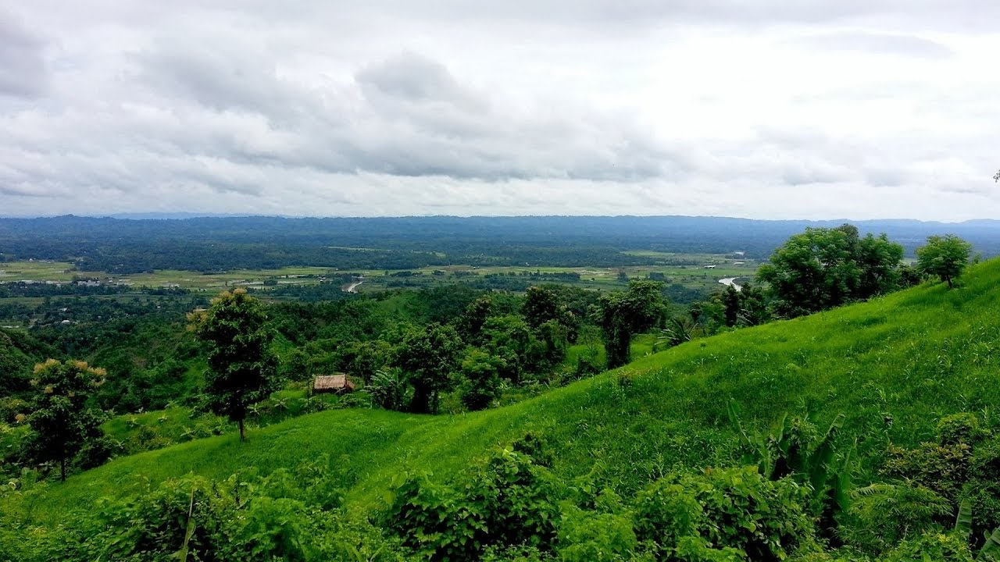
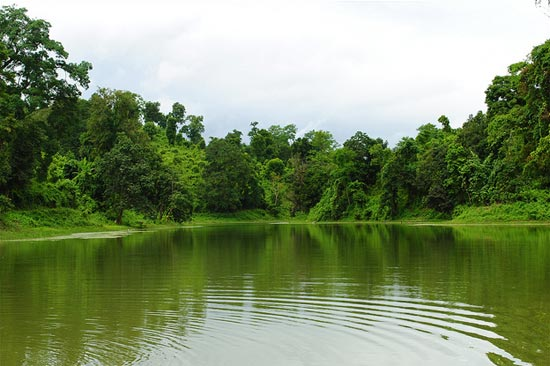

Khagrachari is a district in Bangladesh. It is under Chittagong Division. Locally it is known as “Chengmi” and also known as Phalang Htaung or the Mong Circle. It is a hilly district in Bangladesh. It is 112 km from Chittagong. It is also a part of Chittagong Hill Tracts It is one of the most magnificent places for tourist with hills, forest, waterfalls and aborigine. Three rivers are flow on the through the district. These are Chengi, Kasalong and Maini and Chengi.
Main attraction is the tribal culture, green tree, hilly road and people also. Private and government rest house, hotels, motels and resorts are available. Majority people are Marma and Chakma. Local main transportation is Chader Gari.
Alutila Hill is 150 meter long and very beautiful attractive tourist place of Bangladesh. It is surrounded by deep green forest. Approximately 100 meters long a very dark Cave is the mysterious beauty of Alutila hill. If you are courageous and adventure lover, then this is a perfect spot to vanquish. There is no risk, nothing to warry, it is absolutely safe cave. It will take 15 minutes to pass the cave. Most interesting thing is the cold water flowing at bottom. From top of the hill you can see all around the Khagrachari town. This is an excellent picnic spot.
a very dark Cave is the mysterious beauty of Alutila hill. If you are courageous and adventure lover, then this is a perfect spot to vanquish. There is no risk, nothing to warry, it is absolutely safe cave. It will take 15 minutes to pass the cave. Most interesting thing is the cold water flowing at bottom. From top of the hill you can see all around the Khagrachari town. This is an excellent picnic spot.
First you have to go Khagrachari.You can find many bus service from Dhaka to Khagrachari available. From khagrachari you can can hire micro bus or even local bus are available to reach there at any time of the day.
Khagrachari – Chittagong road the area of Hridoy member. 7 km shout from the Porjoton motel. 2 km shout from Alutila, 1.50 km from east from the main road. Local bus or Chader gari until Hridoy Member area. Rest 1.50 km by foot.
Local bus or Chader gari until Hridoy Member area. Rest 1.50 km by foot.
Several options for reaching the waterfall from the Khagrachhari town. There are lots of public bus used to leave from the bus terminal for Chittagong and Feni. You can take any one of those.Beside the highway,a signboard which says where is the waterfall. From the highway, its 2.1 kilometer walking distance.There are numerous number of hills around the path and being rainy season, the environment is enchantingly green. But if you have your own vehicle, you can use it.Also when you’ll reach at the fall after walking, you’ll feel more adventurous.
Hundred or more years old banyan tree which is spreading almost 2 acres. Till Matiranga 10 number region of Khagrachari- Chittagong Road Buses / chader gari. Fare 10/15 tk, and rest 2.5 km by foot or own vehicles.
Fare 10/15 tk, and rest 2.5 km by foot or own vehicles.
There are lots of buses are available at Khagrachhori bus terminal which used to leave for “Feni” and “Chittagong”. You can take any of those. around each and every 10-15 minutes, a bus used to dispatch for the destination. You’ll require to pay 20 taka per person, and bus will drop you at “Matiranga Bazar”. From there, you have to hire a motor bike. Two person can ride over a single bike. It will take you around 80-100 taka for taking you to the banyan tree, and return back to the bazar. It will be wise to take the bike for round trip, otherwise it will be very difficult for you to find a bike at that place.
The Nunchhori Tripura Village is 13 km south from Porjoton motel, 4 km west from Maishkhali Army camp of Khagrachari – Rangamati road. From there almost 1500 feet above, at the peak of the Mountain is the Debota lake. Local bus or chader gari of Khagrachari – Rangamati Route until Maishchori Army camp. Rest of the 4–5 km by foot. If there is private car then it can go until the Tripura Village.
The Nunchhori Tripura Village is 13 km south from Porjoton motel, 4 km west from Maichchari Army camp of Khagrachari – Rangamati road. From there almost 1500 feet above, at the peak of the Mountain is the Debota lake. Local bus or chadergari of Khagrachari – Rangamati Route go till Maichchori Army camp. You have to go rest 4–5 km on foot. If there is private car then it can go till the Tripura Village. The buses leaving for Khagrachari from Dhaka
Khagrachari Guest House
College Road, Mohajon Para
Phone – 01556510951
Pankhaya Para, Khagrachari Sadar – 4400
Phone- 0371-62634, Mobile- 01556773493, 01863-607090
Region Officers’ Club Khagrachari
Phone: 01783969200
Email: info@rock-sajek.com
Tourist has to go there via Chittagong by air, train or by bus. Direct bus is availed from Dhaka.